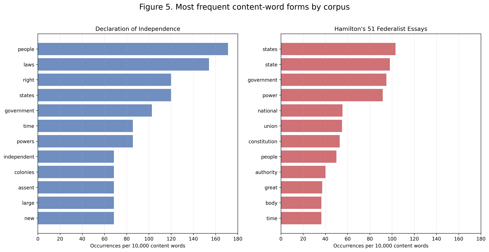
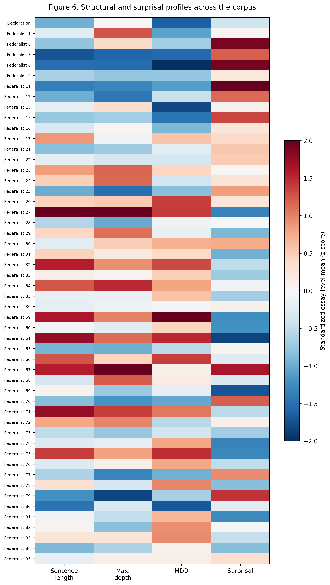
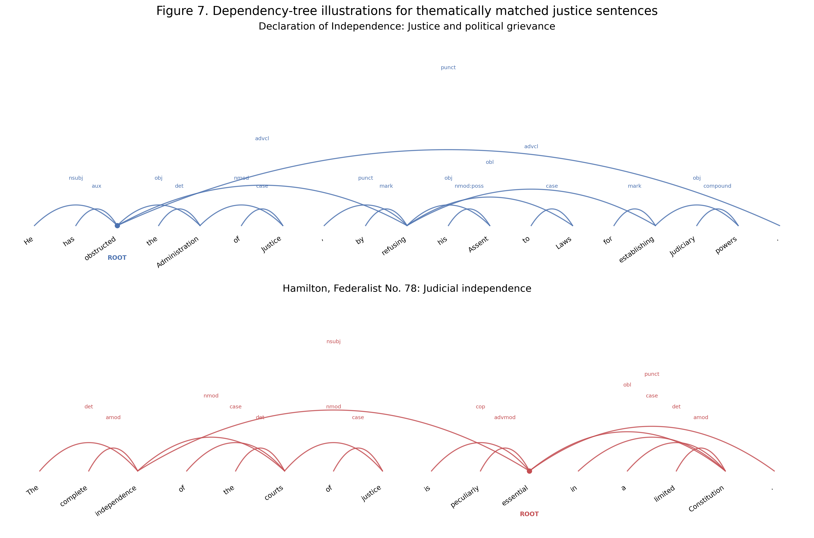

The syntax of justice: My Declaration–Hamilton research project
A sentence-level comparison of the Declaration of Independence and Hamilton’s 51 essays in The Federalist Papers
This study is the result of an internship research project conducted under the guidance of Professor WooJin Chung in the Department of Linguistics at Seoul National University.
1. My first question
This study began with a question I had while learning about the founding of the United States in AP U.S. History.
When I read Hamilton’s writing, I felt that his long and complex sentences made a strong impression. I wondered why. Hamilton had to explain why the new Constitution and a federal government were necessary and persuade people to support them.
The Declaration of Independence had a different purpose. It explained why the colonies should become independent and what rights people should have. Both texts discussed a new nation and its government, but they seemed different in how they were written and what they emphasized.
At first, I thought Hamilton’s sentences would be more complex than those in the Declaration of Independence. I also expected the words in his sentences to be connected through more levels.
To examine this idea, I decided to compare sentence length, sentence structure, the ways words were connected within sentences, and frequently used words. I also used GPT-2 to compare how easily it predicted what came next within sentences in the two texts.
My project had three questions:
- How did the two texts differ in sentence length and sentence structure?
- How did they differ in how easily GPT-2 predicted what came next?
- After removing words used mainly for grammar, which words appeared most frequently in each text?
2. How I prepared and analyzed the texts
A. Preparing the texts
I collected the original texts from the Avalon Project at Yale Law School.
For the Declaration of Independence, I used the main text and removed the signatures. For The Federalist Papers, I selected the 51 essays listed as written by Hamilton alone. I removed the titles, addressee lines, PUBLIUS signatures, website navigation text, and footnote material.
I then used Python to divide the cleaned texts into sentences. The final data included:
- 44 sentences from the Declaration of Independence
- 3,264 sentences from Hamilton’s 51 essays
Each sentence became one unit in the sentence-structure and surprisal analyses.
B. Turning sentences into data
I used Stanza to analyze how the words in each sentence were connected. For every sentence, I calculated four measures:
- Word count: the number of words in the sentence
- Maximum dependency depth: the greatest number of connections from a word to the root
- Mean dependency depth: the average number of connections from each word to the root
- Mean dependency distance (MDD): the average distance between connected words
At first, I mainly focused on tree depth because I thought a deeper tree would explain why Hamilton’s writing felt complex. While doing the analysis, I learned that depth and distance showed different parts of a sentence structure.
C. Surprisal and frequently used words
I used minicons with GPT-2 to calculate surprisal. GPT-2 predicted what came next in each sentence, and surprisal showed how unexpected each token was based on the part before it. I calculated the average surprisal for each sentence.
I also compared frequently used words. I changed uppercase letters to lowercase, removed punctuation and words used mainly for grammar, and counted the remaining words. I included only words with at least three letters. I did not change words to their base forms, so words such as state and states were counted separately. Because the two collections had very different lengths, I changed the counts into frequencies per 10,000 content words.
3. What I found
A. Sentence structure and surprisal
The table shows the averages calculated across the sentences in each collection.
Sentence-Level Corpus Summary and Mean Linguistic Measures
| Corpus | Sentences | Mean word count | Mean maximum dependency depth | Mean dependency depth | Mean MDD | Mean surprisal (bits) |
|---|---|---|---|---|---|---|
| Declaration of Independence | 44 | 34.091 | 5.955 | 2.917 | 3.371 | 5.731 |
| Hamilton’s 51 Federalist essays | 3,264 | 37.738 | 5.888 | 2.971 | 3.634 | 5.814 |
Note. Values for the linguistic measures are means calculated across sentences.
MDD = mean dependency distance.
Hamilton’s sentences were longer on average. Their mean dependency distance was also higher, which means that connected words tended to be farther apart in the sentence.
However, the mean maximum dependency depth was almost the same. It was 5.955 in the Declaration and 5.888 in Hamilton’s essays. My first idea that Hamilton’s sentences would have deeper structures was not confirmed.
The mean surprisal was slightly higher in Hamilton’s essays. However, the median was higher in the Declaration, and the two distributions overlapped. Based on GPT-2, I did not find a clear difference in predictability between the two texts.
This result changed how I thought about sentence structure. Hamilton’s sentences were not simply deeper. They were longer, and connected words tended to be farther apart.
B. Frequently used words
The frequently used words were also different between the two texts.
In the Declaration of Independence, the most frequent content words included people, laws, right, states, government, powers, and colonies.
In Hamilton’s essays, they included states, state, government, power, national, union, constitution, and authority.

The Declaration gives reasons for independence and describes people’s rights. Hamilton’s essays explain the need for a federal government, the Constitution, and national authority. The frequently used words helped me see this difference in focus.
C. Differences among Hamilton’s essays
I first compared the Declaration with all 51 Hamilton essays together. I then looked at each Hamilton essay separately.
The Declaration was generally close to or below the overall average for the four measures. Hamilton’s essays showed different combinations. An essay with longer sentences did not always have a higher maximum dependency depth, MDD, or surprisal.

This showed me that Hamilton’s 51 essays did not all follow one pattern. The sentence measures changed from essay to essay.
D. Looking at an actual sentence pair
I selected one sentence from the Declaration of Independence and one from Federalist No. 78. Both sentences were related to the judiciary and justice.
The dependency trees showed which word was the root of each sentence and how the other words were connected to it.

Seeing the sentences as trees helped me connect the numbers in the analysis with the structure of actual sentences.
4. How the project changed
Before the internship, I selected ten sentences from each text. I later narrowed them down to six pairs and tried drawing syntax trees by myself. I mainly compared the depth of the trees, but I was not sure how to continue from a few examples.
During the internship, I learned how tools such as Stanza and minicons could be used for a larger analysis. With Professor Chung’s guidance, I moved from six sentence pairs to 44 sentences from the Declaration and 3,264 sentences from Hamilton’s essays.
The results also changed my thinking. I began with the idea that Hamilton’s sentences would have deeper structures. Instead, the maximum dependency depth was almost the same, while sentence length and dependency distance showed clearer differences.
The project became less about proving my first idea and more about finding out what the sentences actually showed.
5. What I learned
I began this project thinking that Hamilton’s writing felt complex because his sentences had deeper structures. The results showed something different. His sentences were longer, and connected words tended to be farther apart, but their maximum dependency depth was almost the same as in the Declaration.
I learned that one measure could not explain the difference between the two texts. Sentence length, dependency distance, frequently used words, and differences among Hamilton’s individual essays showed different parts of the writing.
The most important part of the project was not proving my first idea. It was learning how to change that idea after seeing what the sentences actually showed.
6. Research materials
- Status (October 2026): Revising the manuscript and preparing it for journal submission.